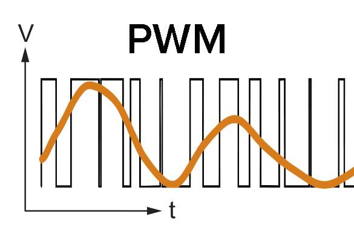
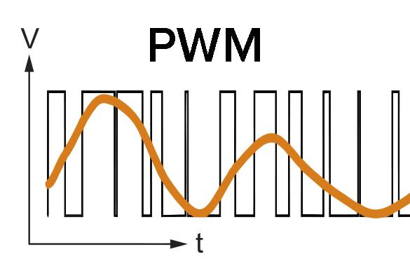
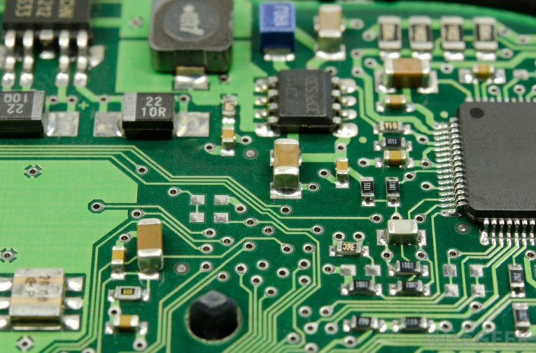
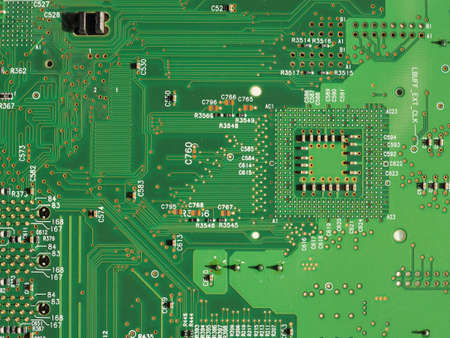

Portfolio
1
STI2D
Recycleur d'air
2
BTS SNEC
Mémoire
3
Projet STI2D : Recycleur d'air ×
Lors de ma terminale STI2D j'ai réalisé en groupe un système visant à analyser l'air ambiant et à la recycler, à l'aide de filtres, si nécessaire. Pour réaliser ce projet nous étions 3, pour ma part j'ai dû réaliser l'analyse du CO2 présent dans l'air ainsi que l'affichage des données sur le LCD du recycleur.
J'ai réalisé mon code sur Flowcode afin d'implémenter mon programme dans un micro-controler microchip. Pendant mes phases de test j'ai pu simuler mon programme à l'aide du logiciel Proteus ISIS (logiciel de CAO) puis avec un test réel en positionnant le capteur dans le pot d'échappement d'une voiture.

Pour réaliser ce projet j'ai dû apprendre a lire et comprendre des documentations techniques (en anglais) afin de pouvoir gérer mes composants, apprendre à utiliser Flowcode, Proteus ISIS et l'utilisation du BUS PWM (Pulse Width Modulation) qui me permettait de gérer mon capteurs de CO2.
 

Mémoire ×
Mon projet de dernière année de BTS s'est passé differemment, en effet le BTS étant en alternance je devais avoir un projet qui je puisse autant travailler en cours qu'en entreprise, cependant ayant réalisé ces années chez SAFRAN Electronics & Defense il était impossible pour moi de ramener mon projet en cours. Mon projet chez SAFRAN, sans rentrer dans les détails, était d'automatiser un test de carte électronique possédant plusieurs cartes mémoires, j'ai donc reproduit un système similaire au CFA.
En première étape j'ai réalisé le code du programme en C, ce programme visé a vidé une carte mémoire puis de la remplir intégralement de valeur aléatoire. Une fois la mémoire écrite le programme venait lire ces valeurs puis les comparer avec les valeurs écrites. Si toutes les valeurs étaient identiques une LED verte s'allumé sinon une LED rouge clignotée.

Une fois le programme opérationnel j'ai réalisé le PCB (printed circuit board) de mon projet a l'aide de proteus ISIS puis souder les composants une fois la circuit électronique imprimé. Grâce à ce projet put acquérir des bases dans le language C et aussi la méthode de programmation par fonction.

